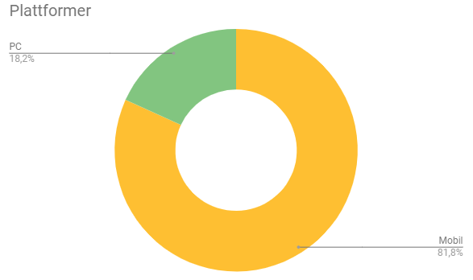

P4 Testing
By: Bendik, Runar, Christopher, Sander, Ingvild
11.11 2018, Sunday
Administrative detaljer
Vår imaginære kunde er Dr. Oetker. Med tillatelse fra Dr. Oetker Norge kan vi bruke navn og bilder av produktet deres Diavola Calabrese.
Testdokument
For å få tilbakemeldinger på nettsiden brukte vi Google Form, der testere måtte svare på konkrete spørsmål om hva de mente om ulike aspekter av siden. For å samle inn bakgrunnsinformasjon om hvem som faktisk testet nettsiden, spurte vi om alder og yrke. Deretter, for å finne ut hvordan de testet siden, spurte vi om hvilken plattform de testet på (PC/mobil/nettbrett), og hvilken nettleser de brukte. Når det gjelder selve nettsiden spurte vi hva de mente om designet (skala fra 1-5, der 5 er best) og hva de mente om brukervennligheten (skala fra 1-5, der 5 er best). Så spurte vi om de kunne nevne både positive ting og negative ting med nettsiden, og hva de eventuelt ville ha endret på.
Testere
Vi sendte ut spørreskjema til venner og familie og prøvde å få variasjon i alder. Av disse fikk vi svar fra elleve personer i alderen 17 til 73. Gjennomsnittsalderen var 32.45, og medianen var 21 år. Testerne hadde varierte bakgrunner, da blant annet både videregåendeelever, pensjonister og studenter fra varierte linjer.
Plattformer
Den mest brukte plattformen var mobil deretter PC, det var ingen av våre testere som brukte nettbrett. Av nettlesere var det desidert flest som brukte google chrome, men også noen som brukte safari.
Feedback sammendrag
Design
På designet av siden fikk vi mye positiv respons, men også kommentarer på at fargepaletten var litt kjedelig og at vi hadde noe ubrukt plass på første side.
Brukervennlighet
Tilbakemeldingene vi fikk her var kun positive og det virker som alle mente at den var enkel og grei å finne fram på.

Vi spurte om negative kommentarer til siden og det vi fikk tilbake var, sett bort ifra de som svarte ingenting, at:
- Det var noe ubrukt plass på hjem-siden og at denne ikke sto i stil med de andre sidene
- Designet var litt for enkelt
- Antall gram i næringsinnholdtabellen kommer på to linjer i mobilversjon
- Overskriften “Næringsinnhold” kommer utenfor boksen på mobilversjon
- De store tallene under tilberedning overlapper den stiplede linjen på mobilversjon
Respons på feedback
Hva vi har endret på ut ifra feedback (endringer etter P3)
- La til overskrift og stiplet linje på index.html for å få den i samme stil som de andre sidene
Hva vi ville ha endret på ut ifra feedback hvis vi skulle jobbet videre med denne siden eller hvis det var en ekte side:
- Endret boksene på index.html, slik at de er like som på de andre sidene (størrelse/plassering).
- Endret skriftsstørrelsen på næringsinnholdtabellen for mobilversjon, slik at det kommer på en linje
- Endret skriftsstørrelsen på overskrifter, slik at alle får plass i boksen sin på mobilversjon
- Gjort de store tallene på tilberedning mindre på mobilversjon, slik at de ikke overlapper den stiplede linjen.
Refleksjon
Etter endt prosjektarbeid har vi fått et innblikk i hvordan det faktisk er å jobbe i team innenfor webutvikling. Vi har lært at det kan være vanskelig å kun bruke ren HTML/CSS/JavaScript, uten for eksempel grid, flexbox eller jQuery. Det var også vanskelig at fem stykker kodet på samme prosjekt samtidig, men at GitHub gjorde dette lettere og mer oversiktlig for oss. Hvis vi skulle ha gjort dette på nytt, ville vi gjort noen ting annerledes, for eksempel at vi fra starten av ble enig om et felles oppsett av HTML for alle sider, slik at mest mulig av CSS’en ble lik, at planen for mappestrukturen hadde vært fulgt fra starten av, og at kodefrister ble overholdt.